8 Graafilised lahendused
library(tidyverse)
library(ggthemes)R-s on kaks olulisemat graafikasüsteemi (ja veel paar-kolm vähemtähtsat), mida võib vaadata nagu kaht eraldi keelt, mis mõlemad elavad R keele sees. Baasgraafika võimaldab väga lihtsate vahenditega teha kiireid ja suhteliselt ilusaid graafikuid. Seda kasutame sageli enda tarbeks kiirete plottide tegemiseks. Ja ggplot2 raamatukogu on hea ilupiltide vormistamiseks ja keskmiselt keeruliste visualiseeringute tegemiseks. Kuigi ggplot2 ja tema sateliit-raamatukogud on meie põhilised huviobjekid, alustame siiski baasgraafikast. Ehki me piirdume vaid väga lihtsate näidetega tasub teada, et baasgraafikas saab teha ka komplekseid visualiseeringuid: http://shinyapps.org/apps/RGraphCompendium/index.php
8.1 Baasgraafika
Kõigepealt tabel, mida me analüüsima hakkame:
iris <- as_tibble(iris)
iris## # A tibble: 150 x 5
## Sepal.Length Sepal.Width Petal.Length Petal.Width
## <dbl> <dbl> <dbl> <dbl>
## 1 5.1 3.5 1.4 0.2
## 2 4.9 3.0 1.4 0.2
## 3 4.7 3.2 1.3 0.2
## 4 4.6 3.1 1.5 0.2
## 5 5.0 3.6 1.4 0.2
## 6 5.4 3.9 1.7 0.4
## 7 4.6 3.4 1.4 0.3
## 8 5.0 3.4 1.5 0.2
## 9 4.4 2.9 1.4 0.2
## 10 4.9 3.1 1.5 0.1
## # ... with 140 more rows, and 1 more variables:
## # Species <fctr>See sisaldab mõõtmistulemusi sentimeetrites kolme Irise perekonna liigi kohta. Esimest korda avaldati need andmed 1936 aastal R.A. Fisheri poolt.
Baasgraafika põhiverb on plot(). See püüab teie poolt ette antud andmete pealt ära arvata, millist plotti te soovite. plot() põhiargumendid on x ja y, mis määravad selle, mida plotitakse x teljele ja mida y teljele. Esimene argument on vaikimisi x ja teine y.
Kui te annate ette faktor-andmed, on vastuseks tulpdiagramm, kus tulbad loevad üles selle faktori kõigi tasemete esinemiste arvu. Antud juhul on meil igast liigist mõõdetud 50 isendit.
plot(iris$Species)
Kui te annate ette ühe pideva muutuja
plot(iris$Sepal.Length)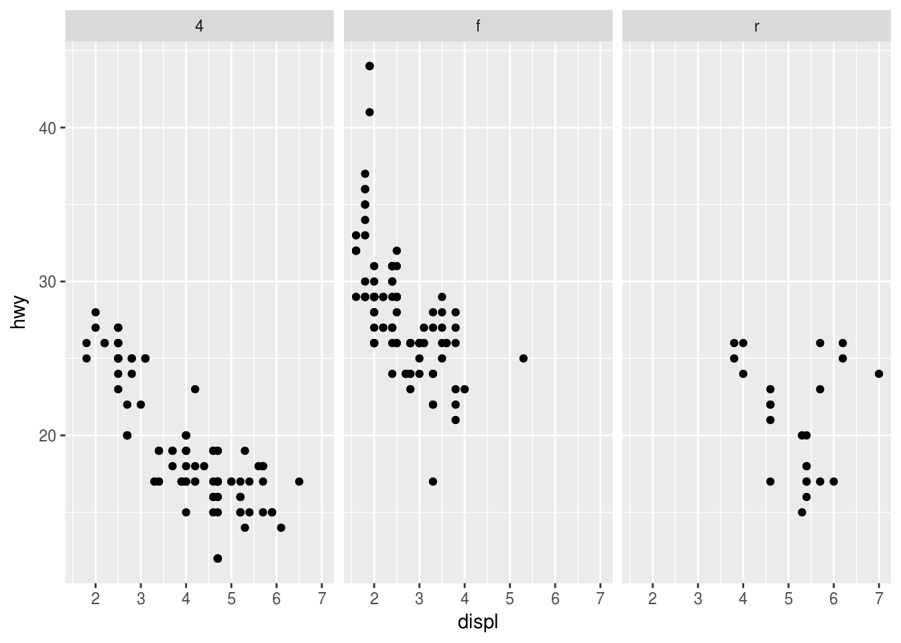
Nüüd on tulemuseks plot, kus on näha mõõtmisete rea (ehk tabeli) iga järgmise liikme (tablei rea) väärtus. Siin on meil kokku 150 mõõtmist muutujale Sepal.Length.
Alternatiiv sellele vaatele on stripchart
stripchart(iris$Sepal.Length)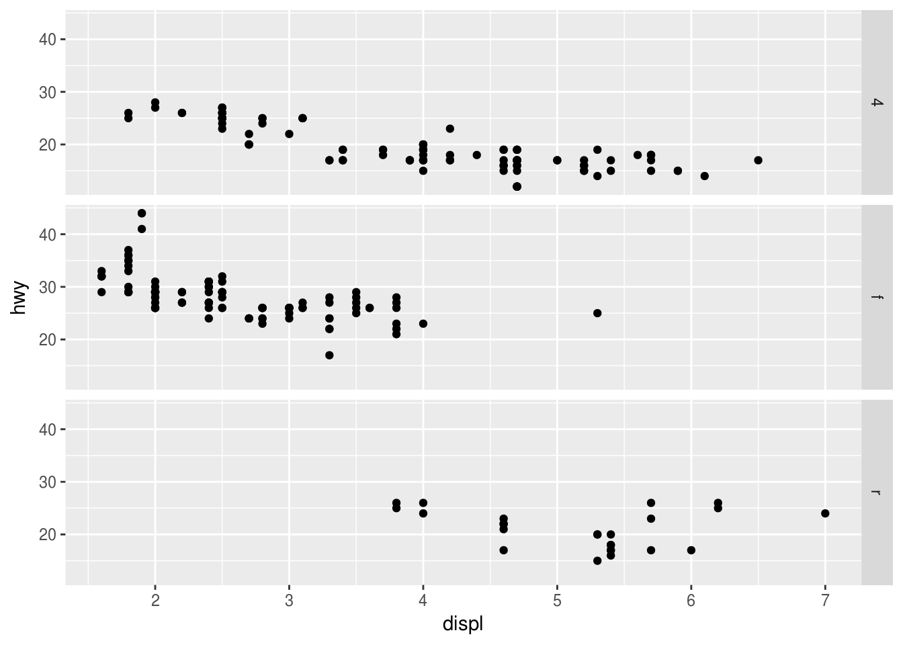
Enam lihtsamaks üks joonis ei lähe!
Mis juhtub, kui me x-teljele paneme faktortunnuse ja y teljele pideva tunnuse?
plot(iris$Species, iris$Sepal.Length)
Vastuseks on boxplot. Sama ploti saame ka nii:
boxplot(iris$Sepal.Length~iris$Species).Siin on tegu R-i mudeli notatsiooniga: y telje muutuja, tilde, x telje muutuja. Tilde näitab, et y sõltub x-st stohhastiliselt, mitte deterministlikult. Deterministliku seost tähistatakse võrdusmärgiga (=).
Aga vastipidi?
plot( iris$Sepal.Length, iris$Species )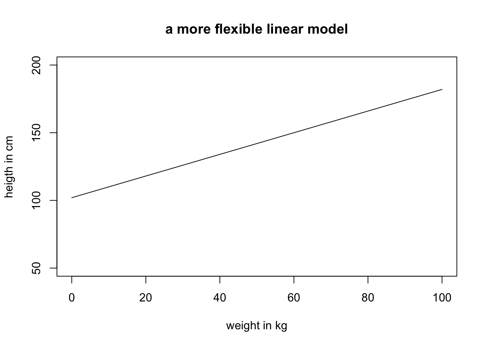
Pole paha, see on üsna informatiivne scatterplot.
Järgmiseks kahe pideva muutuja scatterplot, kus me veel lisaks värvime punktid liigi järgi
plot(iris$Sepal.Length, iris$Sepal.Width, col=iris$Species)
Ja lõpuks tõmbame läbi punktide punase regressioonijoone
plot(iris$Sepal.Length, iris$Sepal.Width)
abline(
lm(iris$Sepal.Width~iris$Sepal.Length),
col="red",
lwd=2
)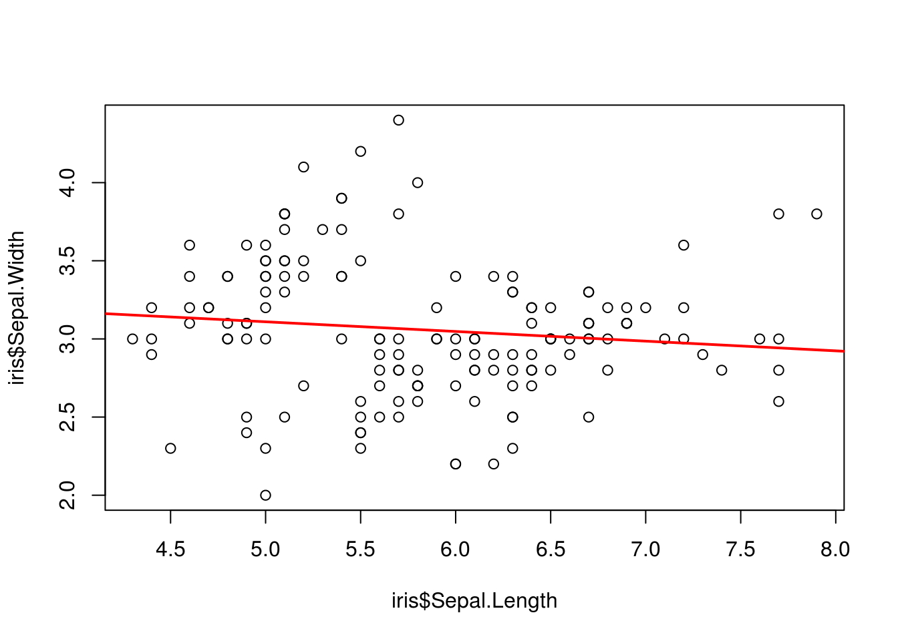
lwd parameeter reguleerib joone laiust. lm() on funktsioon, mis fitib sirge vähimruutude meetodil (vt ptk …).
Mis juhtub, kui me anname plot() funtsioonile sisse kogu irise tibble?
plot(iris, col=iris$Species)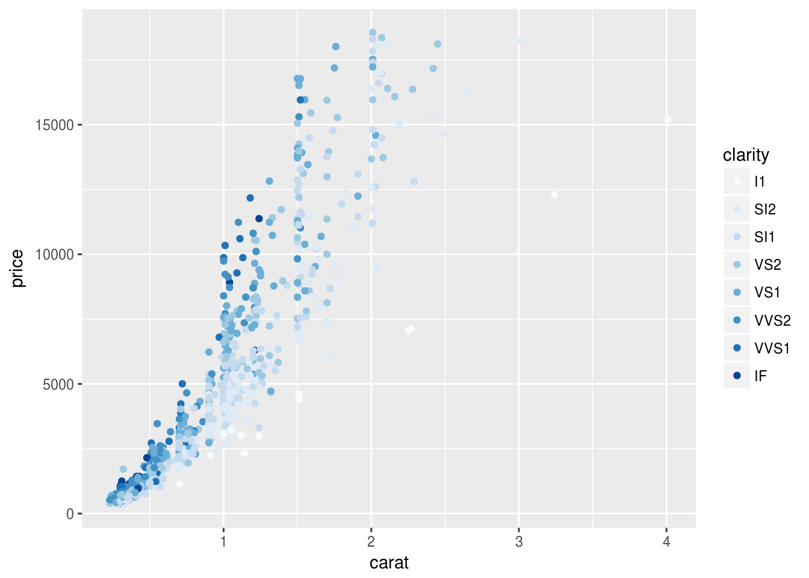
Juhhei, tulemus on paariviisiline plot kõigist muutujate kombinatsioonidest.
Ainus mitte-plot verb, mida baasgraafikas vajame, on hist(), mis joonistab histogrammi
hist(iris$Sepal.Length)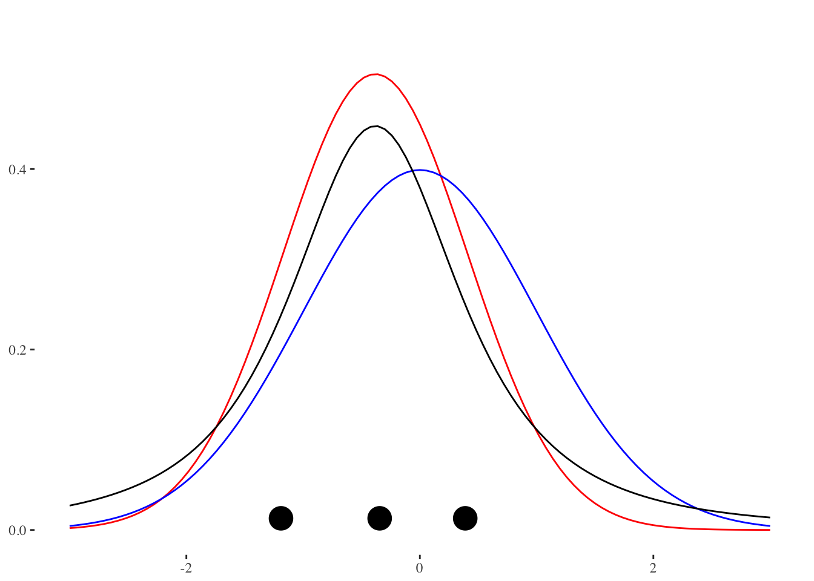
Histogrammi tegemiseks jagatakse andmepunktid nende väärtuste järgi bin-idesse ja plotitakse igasse bin-i sattunud andmepunktide arv. Näiteks esimeses bin-is on Sepal.Length muutuja väärtused, mis jäävad 4 ja 4.5 cm vahele ja selliseid väärtusi on kokku viis. Histogrammi puhul on oluline teada, et selle kuju sõltub bin-ide laiusest. Bini laiust saab muuta kahel viisil:
hist(iris$Sepal.Length, breaks = seq(4, 9, by = 0.25))
või
hist(iris$Sepal.Length, breaks = 15)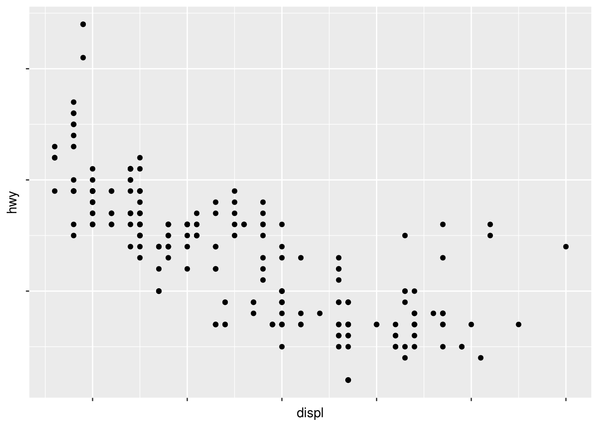
See viimane on kiire viis bin-i laiust reguleerida, aga arvestage, et sõltuvalt andmetest ei pruugi breaks=15 tähendada, et teie histogrammil on 15 bin-i.
Ja lõpuks veel üks histogramm, et demonstreerida baas R-i võimalusi (samad argumendid töötavad ka plot funktsioonis)
hist(iris$Sepal.Length,
freq = FALSE, #if TRUE, the histogram graphic is a representation of frequencies, the counts component of the result; if FALSE, probability densities are plotted so that the histogram has a total area of one
col="red",
breaks = 15,
xlim = c(3, 9), #limits the X axis from 3 to 9
ylim = c(0, 0.6), #limits the Y axis from 0 to 0.6
main = "Iris",
xlab = "sepal length",
ylab="probability density")
abline(v = median(iris$Sepal.Length), col = "blue", lwd = 2) #vertical line that intercepts x at median sepal length
abline(h = 0.3, col = "cyan", lwd = 2) #horisontal line that intercepts y at 0.3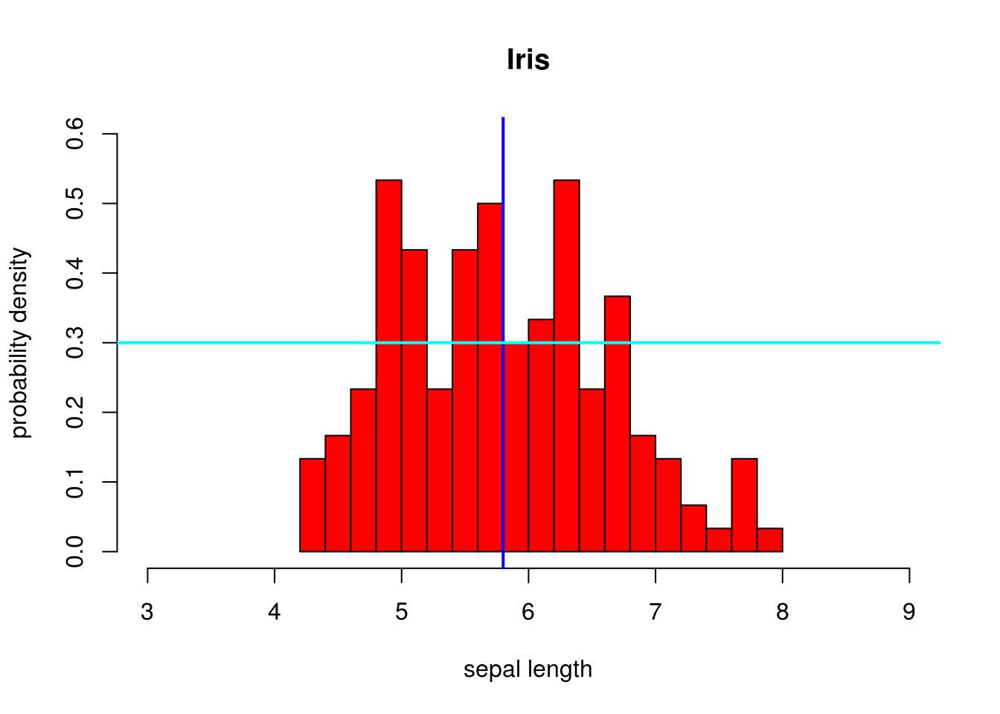
8.2 ggplot2
Ggplot on avaldamiseks sobiva tasemega lihtne aga võimas graafikasüsteem. Näiteid selle abil tehtud visualiseeringutest leiab siit: http://ggplot2.tidyverse.org/reference/ http://www.r-graph-gallery.com http://www.ggplot2-exts.org http://www.cookbook-r.com
ggplot2 põhiverb on ggplot(). See graafikasüsteem töötab kiht-kihi-haaval ja uusi kihte lisatakse pluss-märgi abil. See annab modulaarsuse kaudu lihtsuse ja võimaluse luua ka keerulisi taieseid. Tõenäoliselt on ggplot hetkel kättesaadavatest graafikasüsteemidest parim (kaasa arvates tasulised programmid!).
ggploti töövoog on järgmine:
minimaalselt pead ette andma kolm asja: 1. andmed, mida visualiseeritakse, 2. aes() inputi, mis määrab, milline muutuja läheb x teljele ja milline y teljele, ning 3. geom-i, mis määrab, mis tüüpi visualiseeringut sa tahad. Lisaks määrad sa aes()-is, kas ja kuidas sa tahad grupeerida pidevaid muutujaid faktori tasemete järgi.
Kõigepealt suuname oma andmed ggplot() funktsiooni
iris %>% ggplot()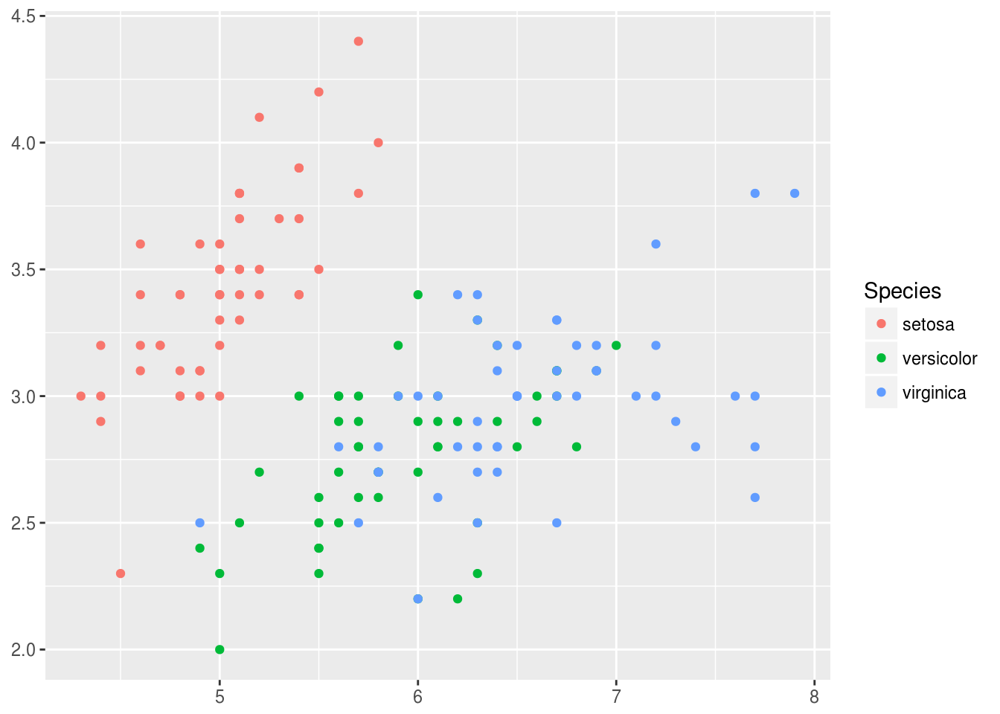
Saime tühja ploti.
Nüüd ütleme, et x teljele pannakse Sepal.Length ja y teljele Sepal.Width andmed.
iris %>% ggplot(aes(x=Sepal.Length, y=Sepal.Width))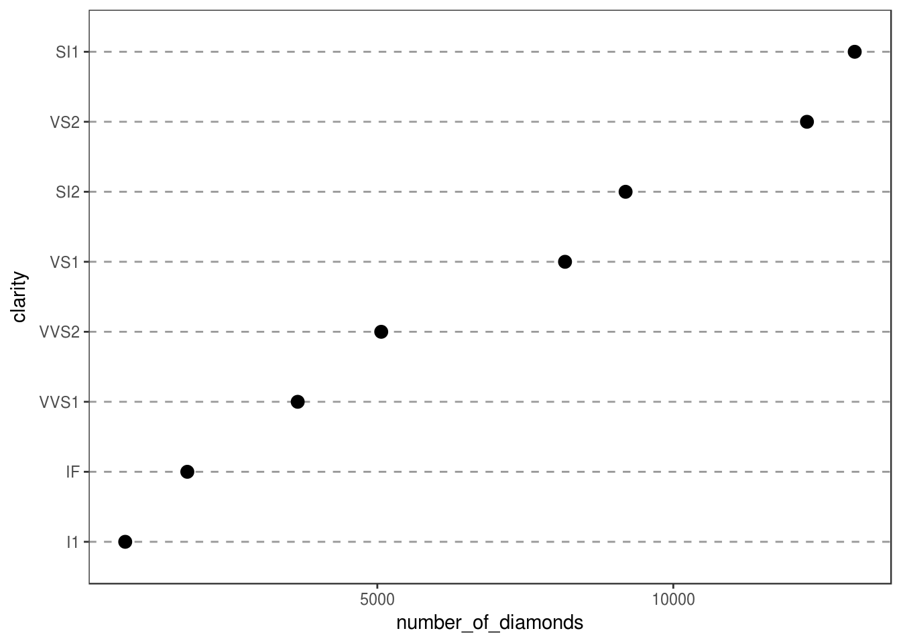
Aga plot on ikka tühi sest me pole ggplotile öelnud, millist visualiseeringut me tahame. Teeme seda nüüd.
iris %>% ggplot(aes(x=Sepal.Length, y=Sepal.Width)) +
geom_point() +
geom_smooth(method = "lm")
Me lisasime kaks kihti: esimene visualiseerib andmepunktid ja teine joonistab regressioonisirge koos usaldusintervalliga (standardviga).
plussmärk peab olema vana rea lõpus, mitte uue rea (kihi) alguses8.2.1 Regressioonisirgete plottimine
Järgmiseks värvime punktid liigi kaupa aga joonistame ikkagi regressioonisirge läbi kõikide punktide. Vt mis juhtub, kui värvide lahutamine toimub ggplot()-i enda aes()-s. Theme_classic muudab graafiku üldist väljanägemist. Proovi ka theme_bw().
iris %>% ggplot(aes(x=Sepal.Length, y=Sepal.Width)) +
geom_point(aes(color=Species)) +
geom_smooth(method = "lm", color="black", se=FALSE) +
theme_classic()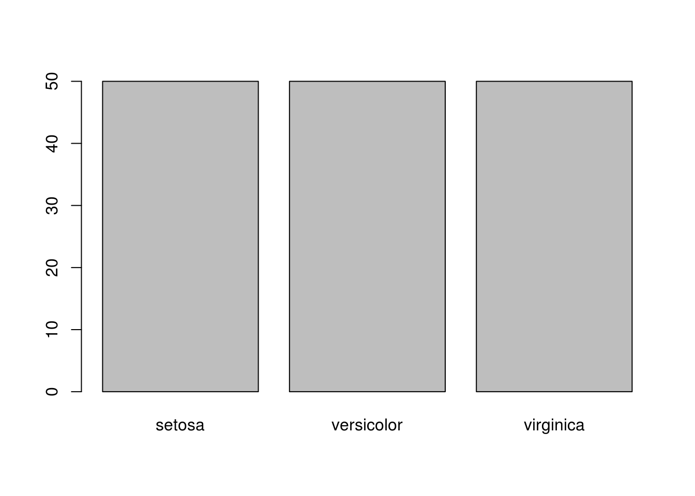
Me võime geom_smooth-i anda erineva andmeseti kui ggplot() põhifunktsiooni. Nii joonistame me regressioonisirge ainult nendele andmetele.
ggplot(iris, aes(x=Sepal.Length, y=Sepal.Width)) +
geom_point() +
geom_smooth(data=filter(iris, Species =="setosa"), method = lm) +
theme_classic()
Siin viis kuidas öelda, et me jätame sisse andmed, kus liik on virginica või versicolor.
ggplot(iris, aes(x=Sepal.Length, y=Sepal.Width)) +
geom_point() +
geom_smooth(data=filter(iris, Species %in% c("virginica", "versicolor")), method = lm) +
theme_bw()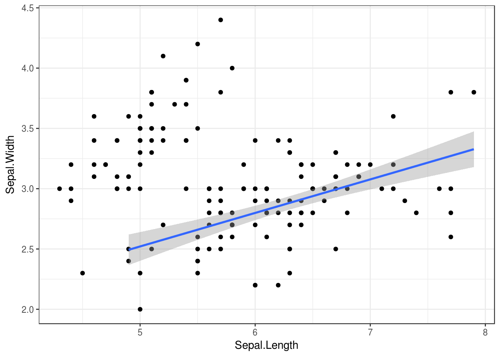
Ja lõpuks joonistame 3 sirget; üks igale liigile.
ggplot(iris, aes(x=Sepal.Length, y=Sepal.Width, color=Species)) +
geom_point() +
geom_smooth(method = "lm", se=F) +
theme_tufte()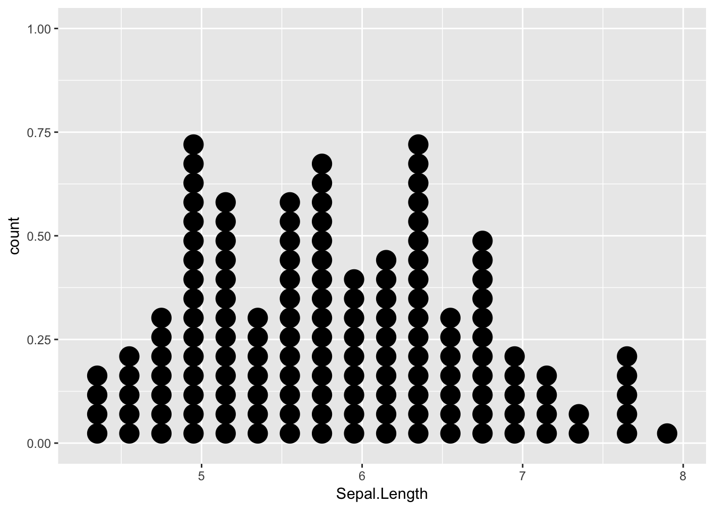
Kaalutud lineaarne mudel on viis anda andmepunktidele, mida me tähtsamaks peame (või mis on täpsemalt mõõdetud) suurem kaal. Kõigepealt, siin on USA demograafilised andmed erinevate kesk-lääne omavalitsuste kohta (437 omavalitsust).
(midwest <- as_tibble(midwest) %>% select(percwhite, percbelowpoverty, poptotal))## # A tibble: 437 x 3
## percwhite percbelowpoverty poptotal
## <dbl> <dbl> <int>
## 1 96.71 13.151 66090
## 2 66.38 32.244 10626
## 3 96.57 12.069 14991
## 4 95.25 7.209 30806
## 5 90.20 13.520 5836
## 6 98.51 10.400 35688
## 7 99.55 15.150 5322
## 8 98.30 11.711 16805
## 9 99.61 13.875 13437
## 10 84.67 15.572 173025
## # ... with 427 more rowsMe tahame teada, kuidas valge rassi osakaal ennustab vaesust, aga me arvame, et suurematel omavalitsustel peaks selles ennustuses olema suurem kaal kui väiksematel. Selleks lisame geom_smooth-i lisaargumendi weight. Punane on kaalumata regressioonisirge. Kaalumine mitte ainult ei muutnud sirge asukohta vaid vähendas ka ebakindlust sirge asukoha kohta.
ggplot(midwest, aes(percwhite, percbelowpoverty)) +
geom_point(aes(size = poptotal)) +
geom_smooth(aes(weight = poptotal), method = lm, size = 1) +
geom_smooth(method = lm, color="red") +
labs(x="percent white", y="percent below poverty")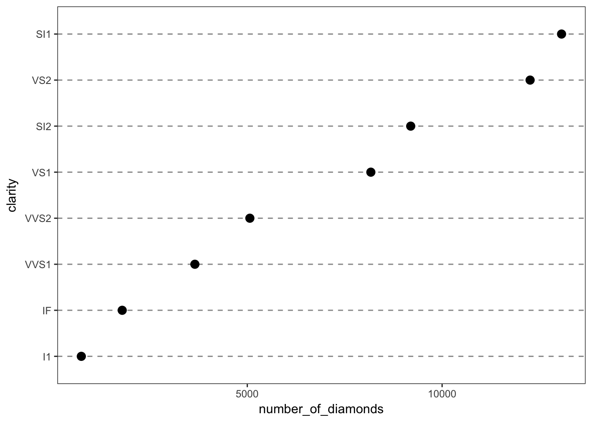
Regeressioonijoone saab eksplitsiitselt määrata intercepti ja slope abil. See on eriti kasulik bayesi mudelite visualiseerimisel mudeli koefitsientide põhjal. Kasuta geom_abline().
sp <- ggplot(data=mtcars, aes(x=wt, y=mpg)) + geom_point()
reg<-lm(mpg ~ wt, data = mtcars)
reg##
## Call:
## lm(formula = mpg ~ wt, data = mtcars)
##
## Coefficients:
## (Intercept) wt
## 37.29 -5.34coeff=coefficients(reg)
# Equation of the line :
sp + geom_abline(intercept = coeff[1], slope = coeff[2], color="red",
linetype="dashed", size=1.5)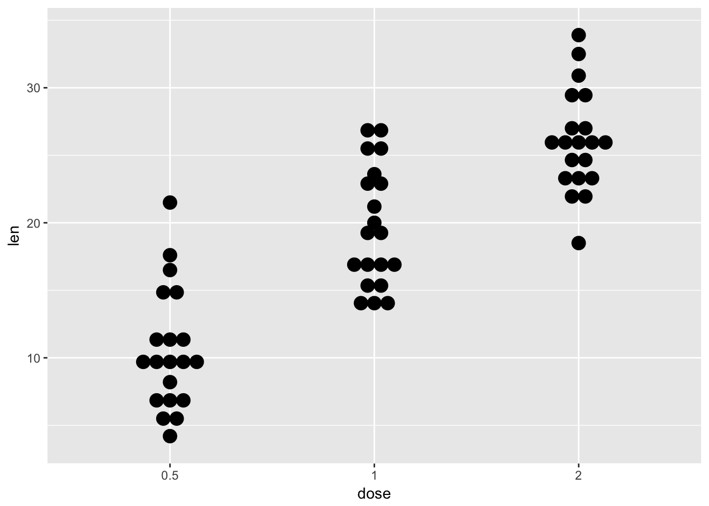
8.2.2 Lisame plotile sirgjooni
Horisontaalsed sirged geom_hline() abil. Pane tähele, et me anname oma ggplot-i põhikihtidele nime ja seega paneme selle aluploti oma töökeskkonda, et saaksime seda korduvkasutada.
# Simple scatter plot
sp <- ggplot(data=mtcars, aes(x=wt, y=mpg)) + geom_point()
# Add horizontal line at y = 2O
sp + geom_hline(yintercept=20, linetype="dashed",
color = "red", size=2)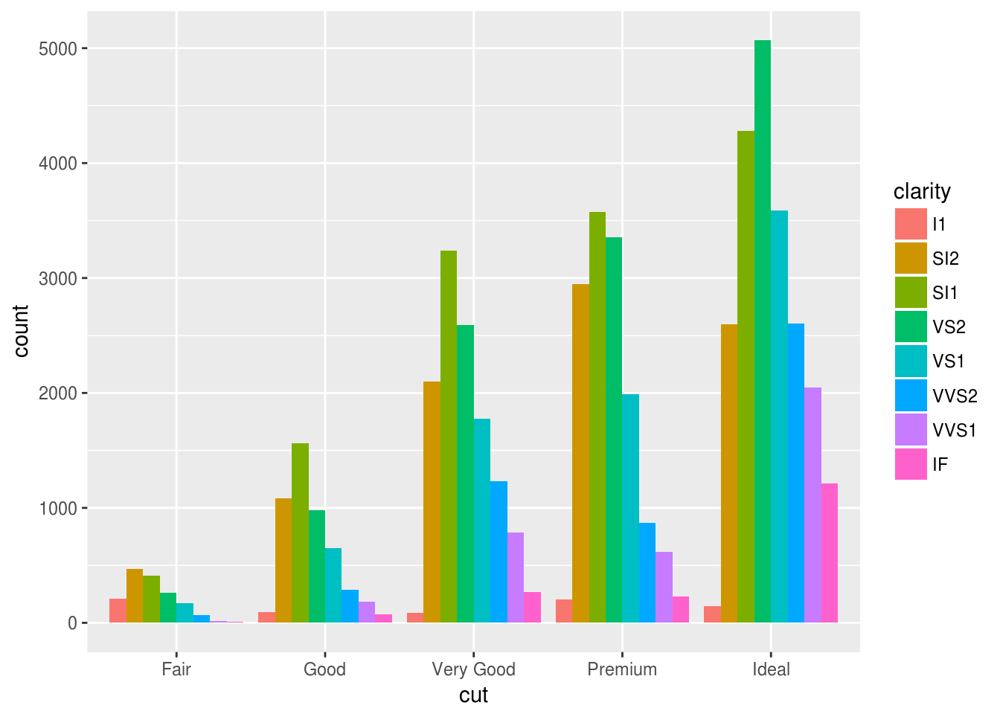
ja vertikaalsed sirged geom_vline abil
# Add a vertical line at x = 3
sp + geom_vline(xintercept = 3, linetype="dotted",
color = "blue", size=1.5)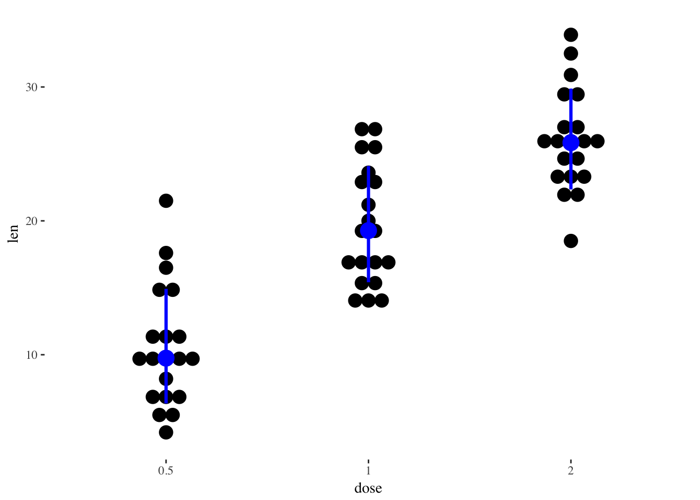
8.2.3 Segmendid ja nooled
geom_segment : lisab joonejupi, mille algus ja lõpp on ette antud
geom_segment(aes(x, y, xend, yend))
# Add a vertical line segment
sp + geom_segment(aes(x = 4, y = 15, xend = 4, yend = 27))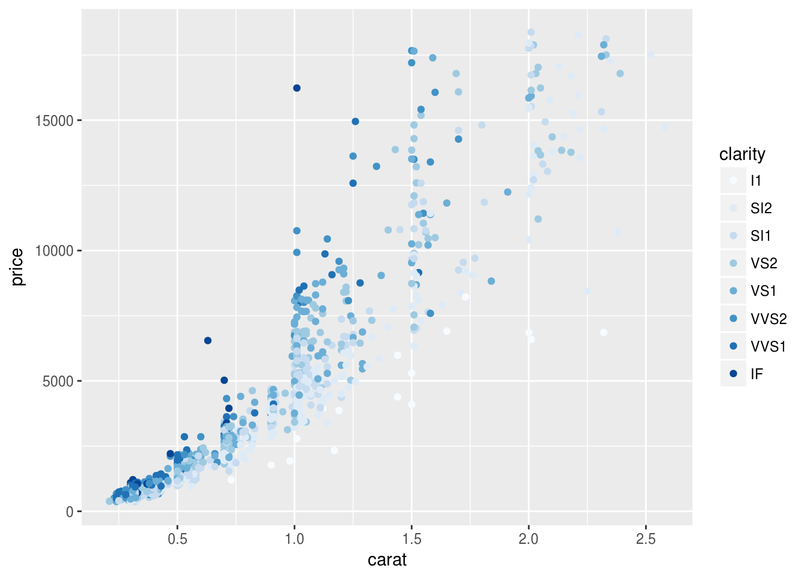
# Add horizontal line segment
sp + geom_segment(aes(x = 2, y = 15, xend = 3, yend = 15))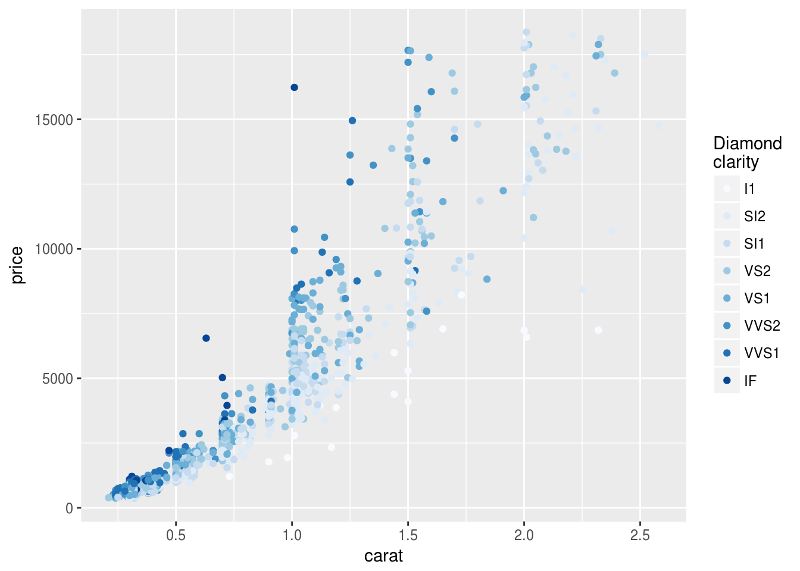
arrow läheb argumendina geom_segment-i
library(grid)
sp + geom_segment(aes(x = 5, y = 30, xend = 3.5, yend = 25),
arrow = arrow(length = unit(0.5, "cm")))
8.2.4 Joongraafikud
Joonetüübid on “blank”, “solid”, “dashed”, “dotted”, “dotdash”, “longdash”, “twodash”.
dfs2 <- data.frame(sex = rep(c("Female", "Male"), each=3),
time=c("breakfeast", "Lunch", "Dinner"),
bill=c(10, 30, 15, 13, 40, 17) )
# Change line colors and sizes
ggplot(data=dfs2, aes(x=time, y=bill, group=sex)) +
geom_line(linetype="dotted", color="red", size=2)+
geom_point(color="blue", size=3)Muudab tüüpi automaatselt muutuja sex taseme järgi
# Change line types + colors
ggplot(dfs2, aes(x=time, y=bill, group=sex)) +
geom_line(aes(linetype=sex, color=sex))+
geom_point(aes(color=sex))+
theme(legend.position="top")Muuda jooni käsitsi:
scale_linetype_manual() : joone tüüp
scale_color_manual() : joone värv
scale_size_manual() : joone laius
ggplot(dfs2, aes(x=time, y=bill, group=sex)) +
geom_line(aes(linetype=sex, color=sex, size=sex))+
geom_point()+
scale_linetype_manual(values=c("twodash", "dotted"))+
scale_color_manual(values=c('#999999','#E69F00'))+
scale_size_manual(values=c(1, 1.5))8.2.5 Punktide tähistamise trikid
aes() töötab nii ggplot() kui geom_ funktsioonides
ggplot(iris) +
geom_point(aes(x=Sepal.Length, y=Sepal.Width, size = Petal.Length, color= Species))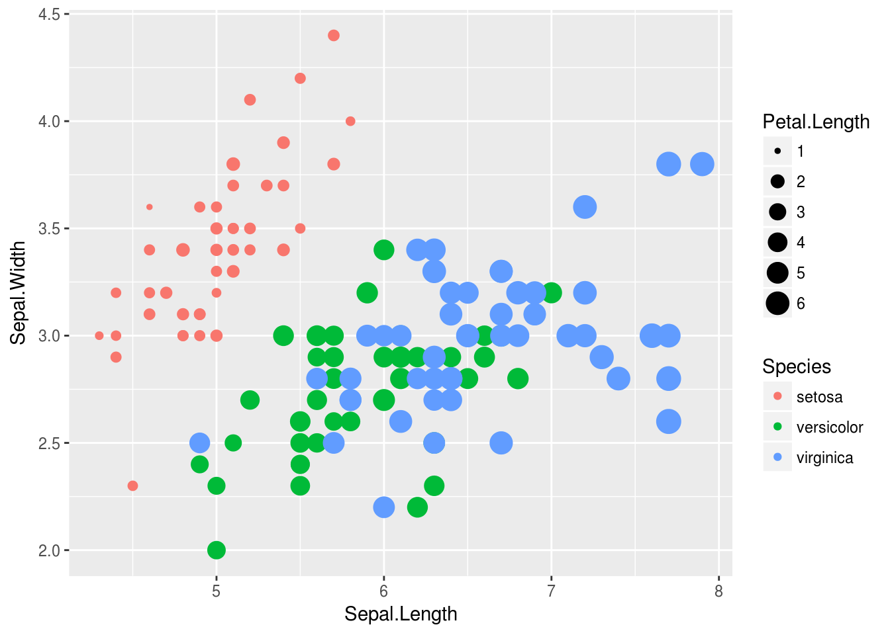
kui me kasutame color argumenti aes()st väljaspool, siis värvime kõik punktid sama värvi.
ggplot(iris) +
geom_point(aes(x=Sepal.Length, y=Sepal.Width, size = Petal.Length), color= "red")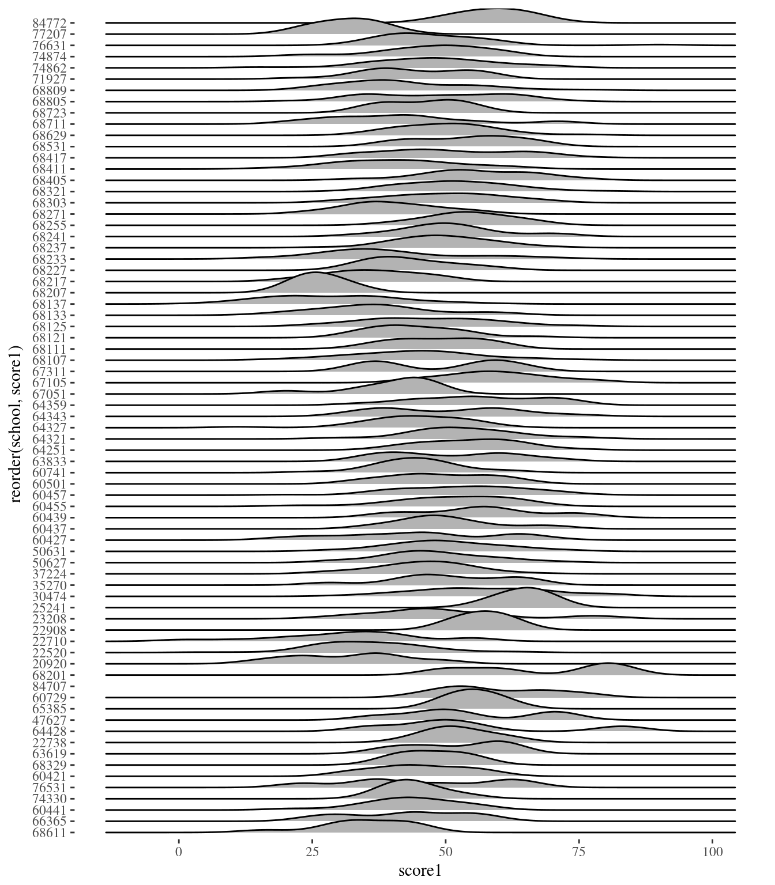
Kasulik trikk on kasutada mitut andmesetti sama ploti tegemiseks. Uus andmestik - mpg - on autode kütusekulu kohta.
head(mpg, 2)## # A tibble: 2 x 11
## manufacturer model displ year cyl trans
## <chr> <chr> <dbl> <int> <int> <chr>
## 1 audi a4 1.8 1999 4 auto(l5)
## 2 audi a4 1.8 1999 4 manual(m5)
## # ... with 5 more variables: drv <chr>, cty <int>,
## # hwy <int>, fl <chr>, class <chr>mpg<-mpg
best_in_class <- mpg %>%
group_by(class) %>%
top_n(1, hwy)
head(best_in_class)## # A tibble: 6 x 11
## # Groups: class [2]
## manufacturer model displ year cyl
## <chr> <chr> <dbl> <int> <int>
## 1 chevrolet corvette 5.7 1999 8
## 2 chevrolet corvette 6.2 2008 8
## 3 dodge caravan 2wd 2.4 1999 4
## 4 dodge caravan 2wd 3.0 1999 6
## 5 dodge caravan 2wd 3.3 2008 6
## 6 dodge caravan 2wd 3.3 2008 6
## # ... with 6 more variables: trans <chr>, drv <chr>,
## # cty <int>, hwy <int>, fl <chr>, class <chr>Siin läheb kitsam andmeset uude geom_point kihti ja teeb osad punktid teistsuguseks. Need on oma klassi parimad autod.
ggplot(mpg, aes(displ, hwy)) +
geom_point(aes(colour = class))+
geom_point(size = 3, shape = 1, data = best_in_class) 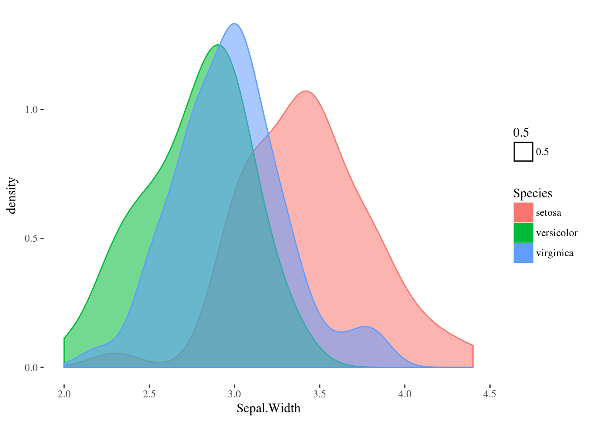
Lõpuks lisame teksti neile parimatele autodele. Selleks kasutame ggrepel raamatukogu funktsiooni geom_label_repel
library(ggrepel)
ggplot(mpg, aes(displ, hwy)) +
geom_point(aes(colour = class))+
geom_point(size = 3, shape = 1, data = best_in_class) +
geom_label_repel(aes(label = model), data = best_in_class, cex=2)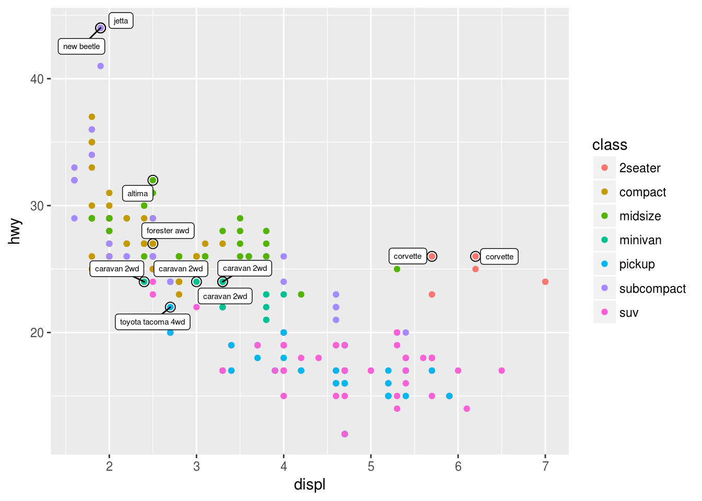
8.3 Facet
Kui teil on mitmeid muutujaid või nende alamhulki, on teil kaks võimalust.
grupeeri pidevad muutujad faktormuutujate tasemete järgi ja kasuta color, fill, shape, size alpha parameetreid, et erinevatel gruppidel vahet teha.
grupeeri samamoodi ja kasuta facet-it, et iga grupp omaenda paneelile panna.
#here we separate different classes of cars into different colors
ggplot(mpg, aes(displ, hwy)) +
geom_point(aes(colour = class))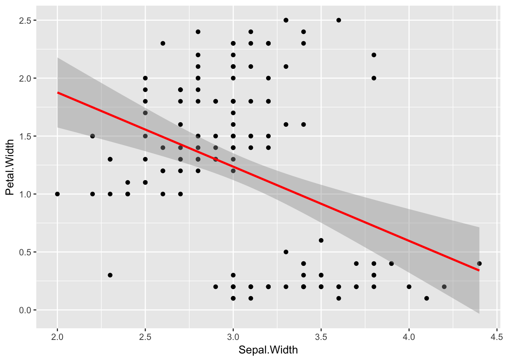
ggplot(mpg, aes(displ, hwy)) +
geom_point()+
facet_wrap(~class, nrow=2)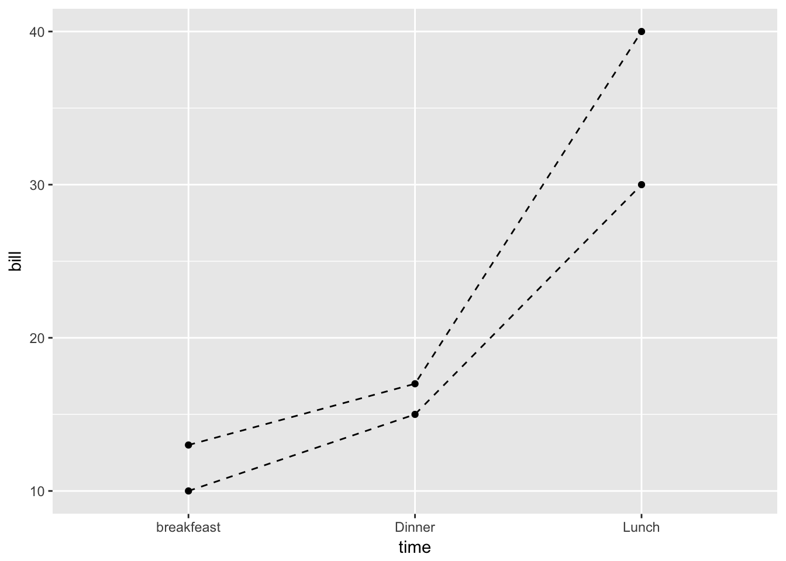
ggplot(mpg, aes(displ, hwy)) +
geom_point()+
facet_wrap(~class, ncol=3)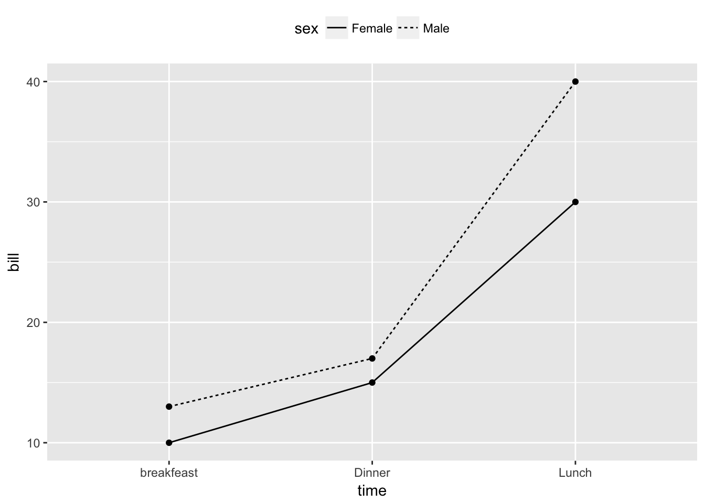
Kui me tahame kahe muutuja kõigi kombinatsioonide vastu paneele, siis kasuta facet_grid
ggplot(mpg, aes(displ, hwy)) +
geom_point()+
facet_grid(drv ~ cyl)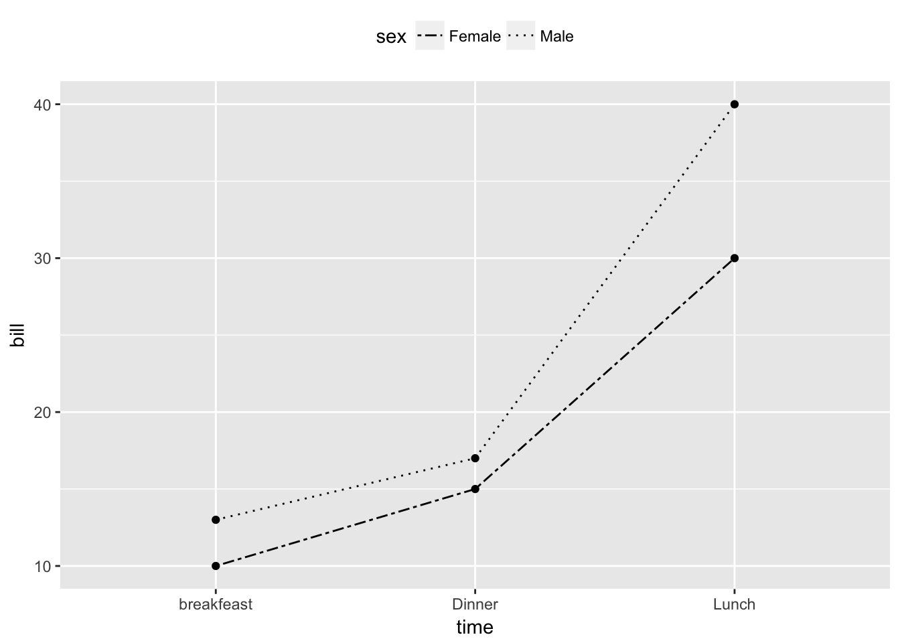
drv — drive - 4(-wheel), f(orward), r(ear) cyl — cylinders - 4, 5, 6, or 8
By using a dot in the equations you can set the facets side-by-side (.~var) or on top of each other (var~.)
ggplot(mpg, aes(displ, hwy)) +
geom_point()+
facet_grid(. ~ drv)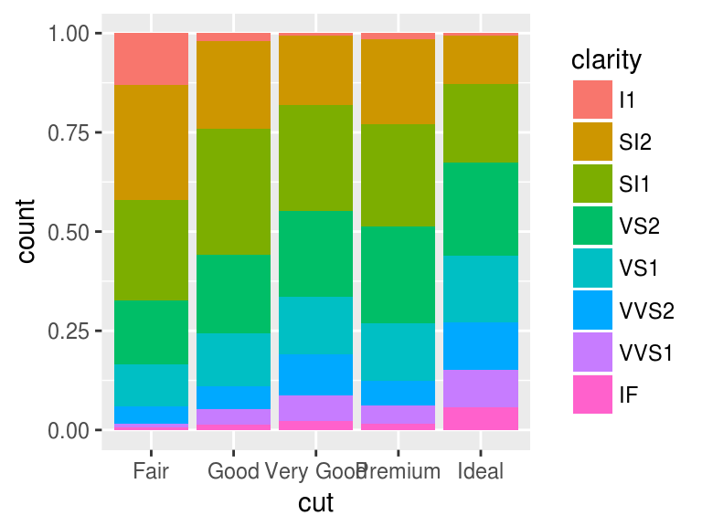
ggplot(mpg, aes(displ, hwy)) +
geom_point()+
facet_grid(drv ~ .)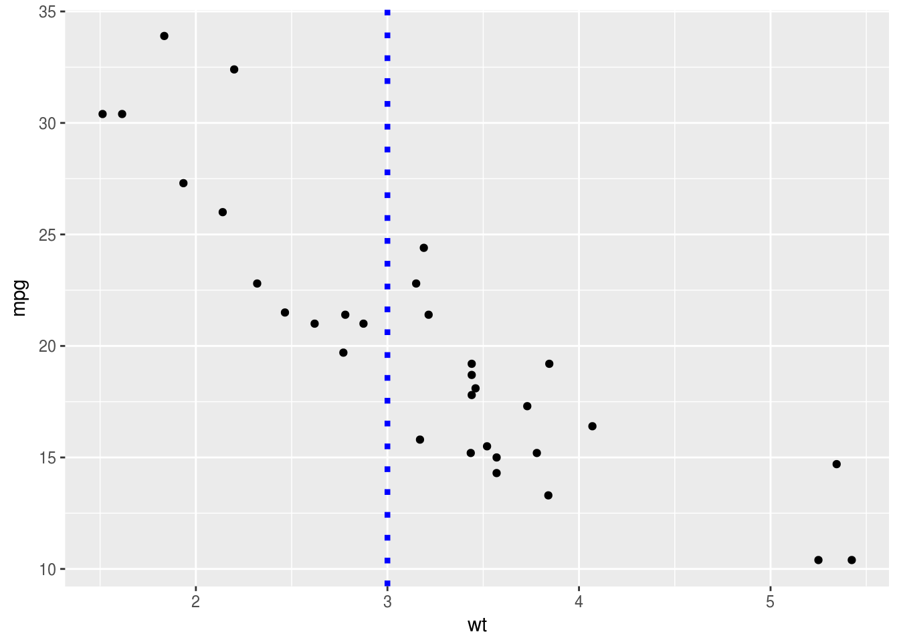
8.3.1 Telgede ulatus
Telgede ulatust saab määrata 3-l erineval viisil
filtreeri andmeid, mida plotid
pane x ja y teljele piirangud xlim(), ylim()
kasuta coord_cartesian() ja xlim, ylim on parameetrid selle sees
coord_cartesian(xlim = c(5, 7), ylim = c(10, 30))
seda saab teha ka x ja y teljele eraldi
scale_x_continuous(limits = range(mpg$displ))
scale_y_continuous(limits = range(mpg$hwy))
scale_colour_discrete(limits = unique(mpg$drv))
8.3.2 log skaalas teljed
- logaritmi andmed aes()-s
ggplot(diamonds, aes(log10(carat), log10(price))) +
geom_bin2d()
Kahjuks on nüüd telgede tähistus log skaalas. Järgnev plot on identne, välja arvatud, et x telg on originaalses lineaarses skaalas
ggplot(diamonds, aes(carat, price)) +
geom_bin2d() +
scale_x_log10() +
scale_y_log10()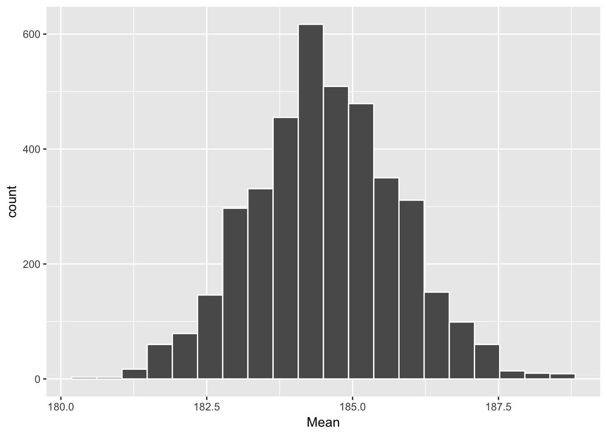
sp <- ggplot(cars, aes(x = speed, y = dist)) + geom_point()
sp
#data and scale are linear
sp + scale_x_continuous(trans='log2') + scale_y_continuous(trans='log2')
#data and scale are both logarithmic
sp + coord_trans(x="log2", y="log2") #data is log transformed but the scale is linear
8.3.3 Muudame telgede markeeringuid
Y telje markeeringud 15st kuni 40-ni, 5-te vahedega
ggplot(mpg, aes(displ, hwy)) +
geom_point() +
scale_y_continuous(breaks = seq(15, 40, by = 5))
muuda teljemarkeeringute nurka
ggplot(mpg, aes(displ, hwy)) +
geom_point() +
theme(axis.text.x = element_text(angle=90, hjust=1, vjust=0.5))eemaldame telgede markeeringud
ggplot(mpg, aes(displ, hwy)) +
geom_point() +
scale_x_continuous(labels = NULL) +
scale_y_continuous(labels = NULL)8.3.4 Muudame telgede ja legendi nimed
a1 <- ggplot(iris, aes(Sepal.Length, Sepal.Width, color = Species)) +
geom_point()
a1 + labs(
x = "Length",
y = "Width",
color = "Iris sp."
)eemaldame telgede nimed
a1 +
xlab(NULL) +
ylab(NULL)8.3.5 Koordinaatsüsteemid
Põõrame graafikut 90 kraadi
ggplot(iris, mapping = aes(x = Species, y = Sepal.Length)) +
geom_boxplot()ggplot(iris, mapping = aes(x = Species, y = Sepal.Length)) +
geom_boxplot() +
coord_flip()
8.4 Pealkirjad ja muu selline
graafiku pealkiri, ala-peakiri ja allkiri
a1 <- ggplot(iris, aes(Sepal.Length, Sepal.Width, color = Species)) +
geom_point()
a1 + labs(
title = "Title",
subtitle = "subtitle",
caption = "caption"
)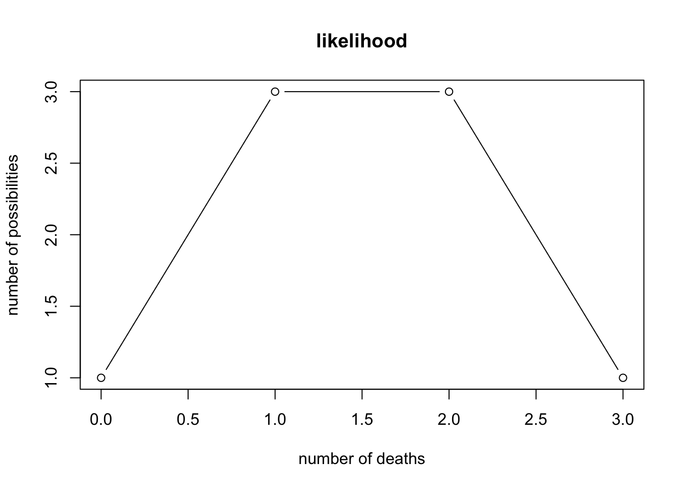
ggtitle() - anna graafikule pealkiri
8.4.1 Graafiku legend
legend ei ole pool-läbipaistev, samas kui graafik on seda
norm <- tibble(x = rnorm(1000), y = rnorm(1000))
norm$z <- cut(norm$x, 3, labels = c( "a" , "b" , "c" )) #creates a new column
ggplot(norm, aes(x, y)) +
geom_point(aes(colour = z), alpha = 0.3) +
guides(colour = guide_legend(override.aes = list(alpha = 1)))legend graafiku sisse
df <- data.frame(x = 1:3, y = 1:3, z = c( "a" , "b" , "c" ))
base <- ggplot(df, aes(x, y)) +
geom_point(aes(colour = z), size = 3) +
xlab(NULL) +
ylab(NULL)
base + theme(legend.position = c(0, 1), legend.justification = c(0, 1))
base + theme(legend.position = c(0.5, 0.5), legend.justification = c(0.5, 0.5))
base + theme(legend.position = c(1, 0), legend.justification = c(1, 0))legendi asukoht graafiku ümber:
base + theme(legend.position = "left")
base + theme(legend.position = "top")
base + theme(legend.position = "bottom")
base + theme(legend.position = "right") # the defaulteemalda legend
ggplot(mpg, aes(displ, hwy)) +
geom_point(aes(colour = class))+
theme(legend.position = "none")8.5 Värviskaalad
ColorBreweri skaalad värvipimedatele
ggplot(mpg, aes(displ, hwy)) +
geom_point(aes(color = drv)) +
scale_colour_brewer(palette = "Set1")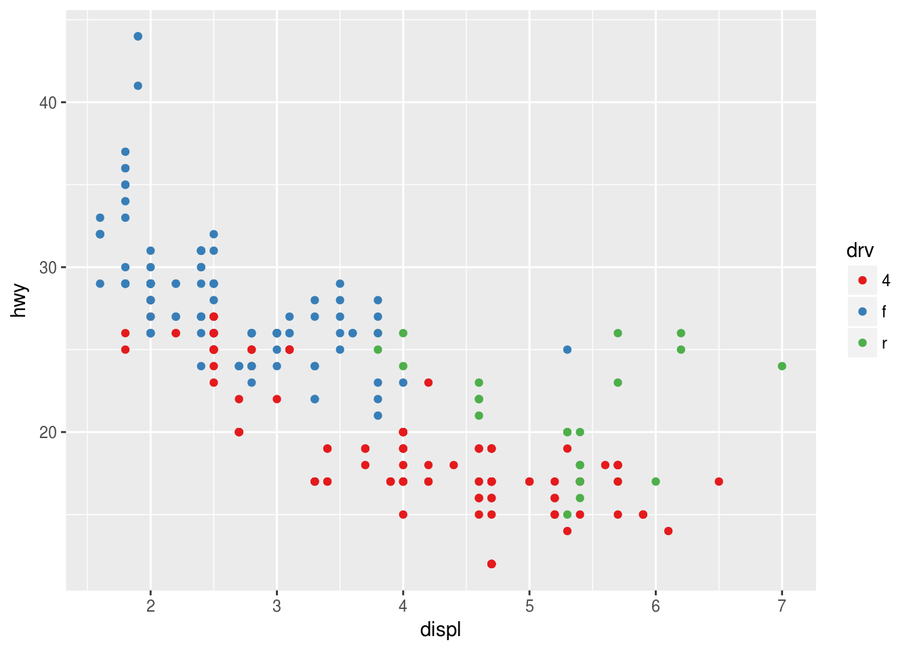
8.5.1 Pidevatele muutujatele
df <- data.frame(x = 1, y = 1:5, z = c(1, 3, 2, NA, 5))
p <- ggplot(df, aes(x, y)) + geom_tile(aes(fill = z), size = 5)
p
# Make missing colours invisible
p + scale_fill_gradient(na.value = NA)
# Customise on a black and white scale
p + scale_fill_gradient(low = "black" , high = "white" , na.value = "red" )
#gradient between n colours
p+scale_color_gradientn(colours = rainbow(5))8.5.2 Faktormuutujatele 4 värviskaalat
The default colour scheme, scale colour hue(), picks evenly spaced hues around the HCL colour wheel. This works well for up to about eight colours, but after that it becomes hard to tell the different colours apart. You can control the default chroma and luminance, and the range of hues, with the h, c and l arguments:
ToothGrowth <- ToothGrowth
ToothGrowth$dose <- as.factor(ToothGrowth$dose)
mtcars <- mtcars
mtcars$cyl <- as.factor(mtcars$cyl)
#bp for discrete color scales
bp<-ggplot(ToothGrowth, aes(x=dose, y=len, fill=dose)) +
geom_boxplot()
bp
#sp for continuous scales
sp<-ggplot(mtcars, aes(x=wt, y=mpg, color=cyl)) + geom_point()
sp
#The lightness (l) and the chroma (c, intensity of color)
#of the default (hue) colors can be modified
bp + scale_fill_hue(l=40, c=35) #boxplot
sp + scale_color_hue(l=40, c=35) #scatterplot
#manual color
bp + scale_fill_manual(values=c("#999999", "#E69F00", "#56B4E9"))
sp + scale_color_manual(values=c("#999999", "#E69F00", "#56B4E9"))
#install.packages("wesanderson")
#library(wesanderson)
#bp+scale_fill_manual(values=wes_palette(n=3, name="GrandBudapest"))The argument breaks can be used to control the appearance of the legend. This holds true also for the other scale_xx() functions.
# Box plot
bp + scale_fill_manual(breaks = c("2", "1", "0.5"),
values=c("red", "blue", "green"))
# Scatter plot
#sp + scale_color_manual(breaks = c("8", "6", "4"),
# values=c("red", "blue", "green"))
# color palettes
bp + scale_fill_brewer(palette="Dark2")
#sp + scale_color_brewer(palette="Dark2")
#use graysacle
#Change the gray value at the low and the high ends of the palette :
bp + scale_fill_grey(start=0.8, end=0.2) + theme_classic()
#sp + scale_color_grey(start=0.8, end=0.2) + theme_classic() The ColorBrewer scales are documented online at http://colorbrewer2.org/ and made available in R via the RColorBrewer package. When you have a predefined mapping between values and colours, use scale_colour_manual().
scale_colour_manual(values = c(factor_level_1 = “red”, factor_level_2 = “blue”)
scale_colour_viridis() provided by the viridis package is a continuous analog of the categorical ColorBrewer scales.
For continuous colour, you can use the built-in scale_colour_gradient() or scale_fill_gradient(). If you have a diverging scale, you can use scale_colour_gradient2(). That allows you to give, for example, positive and negative values different colours. That’s sometimes also useful if you want to distinguish points above or below the mean.
dfs <- data.frame(x = c( "a" , "b" , "c" , "d" ), y = c(3, 4, 1, 2))
bars <- ggplot(dfs, aes(x, y, fill = x)) +
geom_bar(stat = "identity" ) +
labs(x = NULL, y = NULL) +
theme(legend.position = "none" )
bars
bars + scale_fill_hue(c = 40)
bars + scale_fill_hue(h = c(180, 300))
bars + scale_fill_brewer(palette = "Set1" )
bars + scale_fill_brewer(palette = "Set2" )
bars + scale_fill_brewer(palette = "Accent" )
bars + scale_fill_grey()
bars + scale_fill_grey(start = 0.5, end = 1)
bars + scale_fill_grey(start = 0, end = 0.5)8.6 A complex ggplot
Let’s pretend that we are measuring the same quantity by immunoassay at baseline and after 1 year of storage at -80 degrees. We’ll add some heteroscedastic error and create some apparent degradation of about 20%:
library(tidyverse)
set.seed(10) #make predictable random data
baseline <- rlnorm(100, 0, 1)
post <- 0.8*baseline + rnorm(100, 0, 0.10*baseline)
my.data <- data.frame(baseline, post)
ggplot(my.data, aes(x=baseline, y=post)) +
theme_bw() +
geom_point(shape=1) + # Use hollow circles
geom_smooth(method=lm) + # Add linear regression line
geom_abline(slope = 1, intercept = 0, linetype = 2, colour = "red")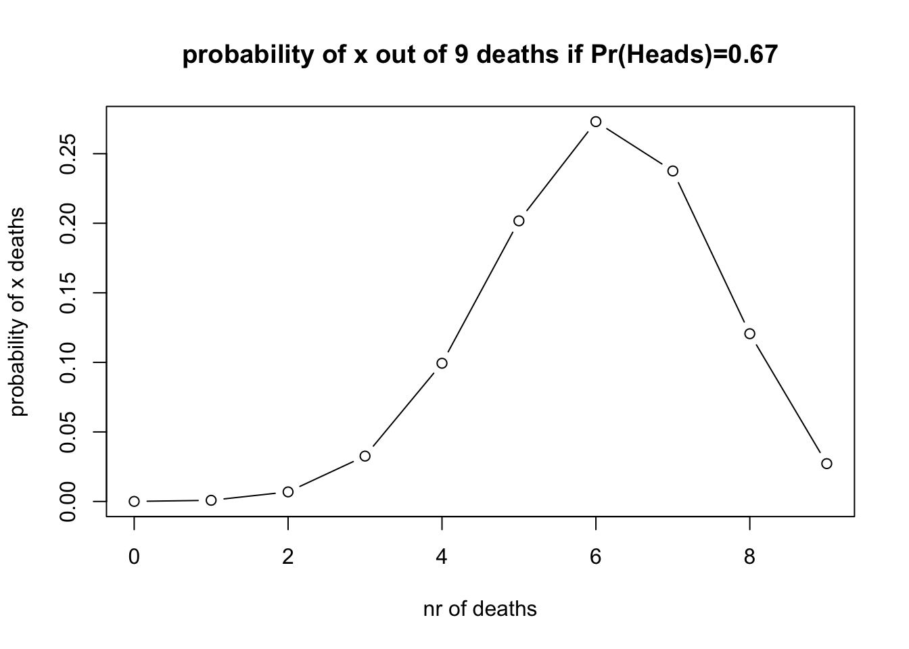
Now we will prepare the difference data:
diff <- (post - baseline)
diffp <- (post - baseline)/baseline*100
sd.diff <- sd(diff)
sd.diffp <- sd(diffp)
my.data <- data.frame(baseline, post, diff, diffp)In standard Bland Altman plots, one plots the difference between methods against the average of the methods, but in this case, the x-axis should be the baseline result, because that is the closest thing we have to the truth.
library(ggExtra)
diffplot <- ggplot(my.data, aes(baseline, diff)) +
geom_point(size=2, colour = rgb(0,0,0, alpha = 0.5)) +
theme_bw() +
#when the +/- 2SD lines will fall outside the default plot limits
#they need to be pre-stated explicitly to make the histogram line up properly.
ylim(mean(my.data$diff) - 3*sd.diff, mean(my.data$diff) + 3*sd.diff) +
geom_hline(yintercept = 0, linetype = 3) +
geom_hline(yintercept = mean(my.data$diff)) +
geom_hline(yintercept = mean(my.data$diff) + 2*sd.diff, linetype = 2) +
geom_hline(yintercept = mean(my.data$diff) - 2*sd.diff, linetype = 2) +
ylab("Difference pre and post Storage (mg/L)") +
xlab("Baseline Concentration (mg/L)")
#And now for the magic - we'll use 25 bins
ggMarginal(diffplot, type="histogram", bins = 25)We can also obviously do the percent difference.
diffplotp <- ggplot(my.data, aes(baseline, diffp)) +
geom_point(size=2, colour = rgb(0,0,0, alpha = 0.5)) +
theme_bw() +
geom_hline(yintercept = 0, linetype = 3) +
geom_hline(yintercept = mean(my.data$diffp)) +
geom_hline(yintercept = mean(my.data$diffp) + 2*sd.diffp, linetype = 2) +
geom_hline(yintercept = mean(my.data$diffp) - 2*sd.diffp, linetype = 2) +
ylab("Difference pre and post Storage (%)") +
xlab("Baseline Concentration (mg/L)")
ggMarginal(diffplotp, type="histogram", bins = 25)Bååth, Rasmus. 2013. “Bayesian First Aid.” Tba. tba.
———. 2016. Bayesboot: An Implementation of Rubin’s (1981) Bayesian Bootstrap. https://CRAN.R-project.org/package=bayesboot.
Bürkner, Paul-Christian. 2017. “brms: An R Package for Bayesian Multilevel Models Using Stan.” Journal of Statistical Software 80 (1): 1–28. doi:10.18637/jss.v080.i01.
Gabry, Jonah, and Tristan Mahr. 2017. Bayesplot: Plotting for Bayesian Models. http://mc-stan.org/bayesplot.
Gelman, Andrew, John B Carlin, Hal S Stern, David B Dunson, Aki Vehtari, and Donald B Rubin. 2014. Bayesian Data Analysis. Vol. 2. CRC press Boca Raton, FL.
Kruschke, John. 2015. Doing Bayesian Data Analysis: A Tutorial with R, Jags, and Stan. 2nd ed. Academic Press / Elsevier.
Marwick, Ben, Carl Boettiger, and Lincoln Mullen. 2017. “Packaging Data Analytical Work Reproducibly Using R (and Friends).” PeerJ Preprints 5: e3192v1. doi:10.7287/peerj.preprints.3192v1.
McElreath, Richard. 2015. Statistical Rethinking: A Bayesian Course with Examples in R and Stan. CRC Press.
———. 2016. Rethinking: Statistical Rethinking Book Package.
Stan Development Team. 2016. Rstanarm: Bayesian Applied Regression Modeling via Stan. http://mc-stan.org/.
Wickham, Hadley, Peter Danenberg, and Manuel Eugster. 2017. Roxygen2: In-Line Documentation for R. https://CRAN.R-project.org/package=roxygen2.